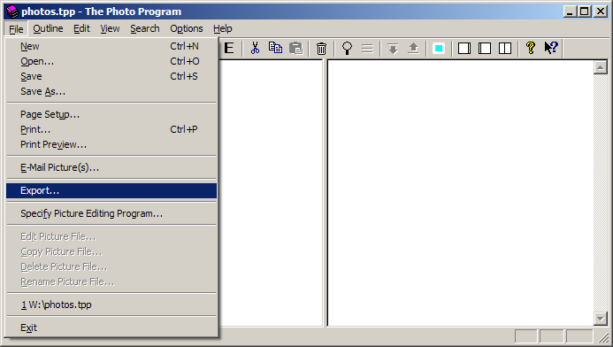

How to Import The Photo Program Files into Vault 3
You can easily convert your The Photo Program files to Vault 3 files:
- You will need the latest, registered version of The Photo Program. If you are a registered user, request the latest version of The Photo Program.
- Run The Photo Program and open the file you want to convert to Vault 3 format:
-
Select File / Export:

-
Specify the export filename and specify XML Files (*.xml) as the type.
-
Press the save button.
- Go to Vault 3 and select File / Import Vault or The Photo Program XML File:
-
Navigate to the file you exported from The Photo Program and click Open:
-
Expand the outline item by clicking the +:
-
Select all items except for the first:
-
Select Outline / Unindent:
-
Select the first outline item. Then select Outline / Remove: